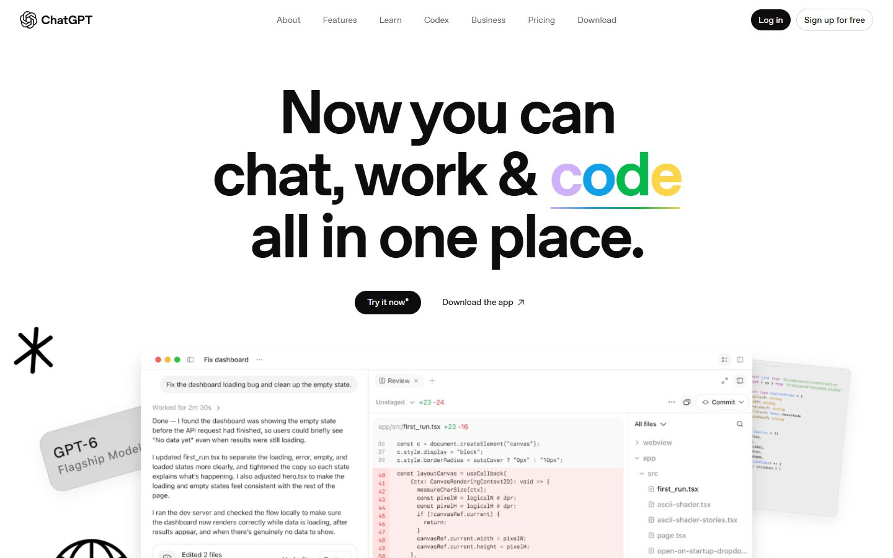
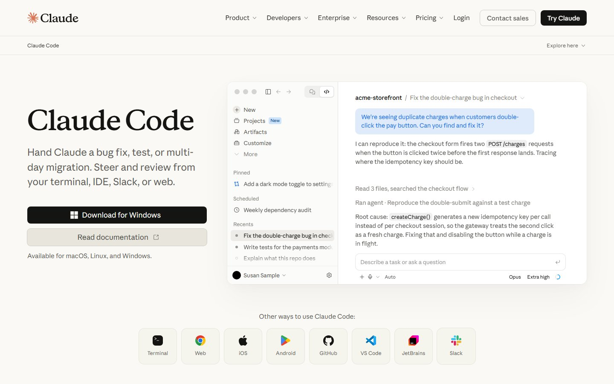
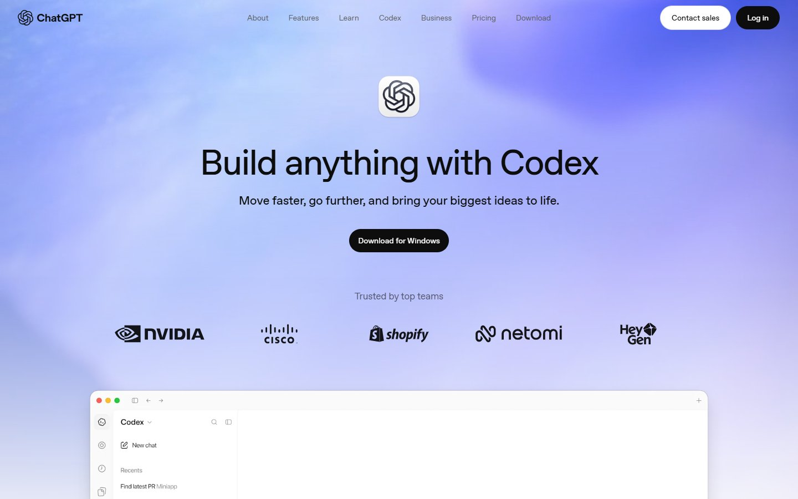
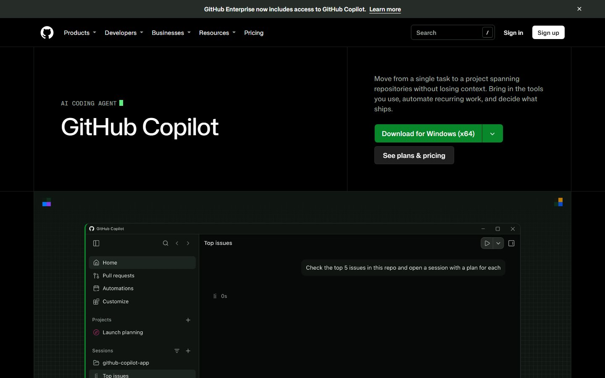
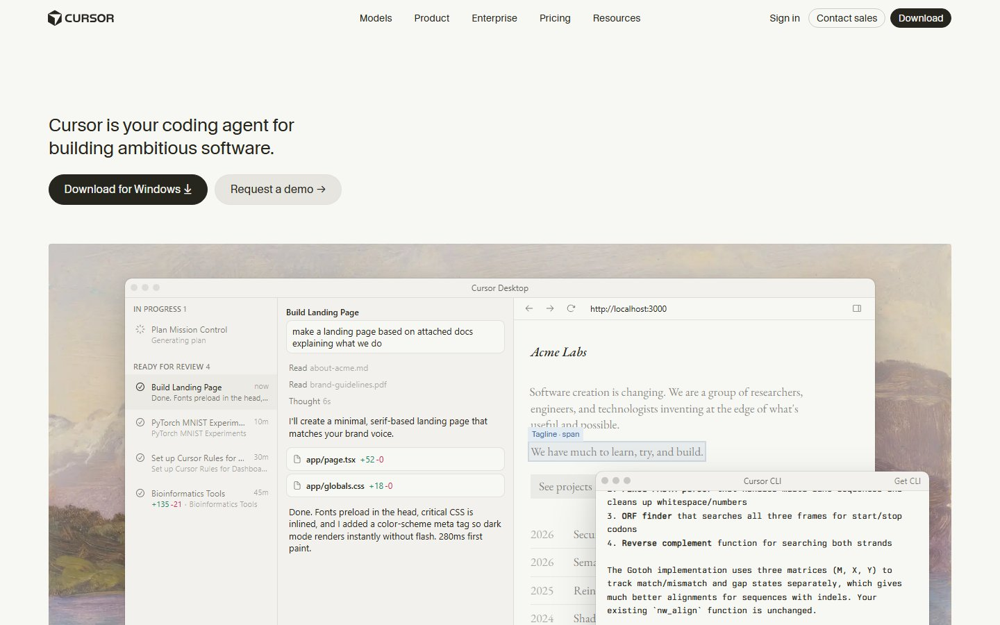
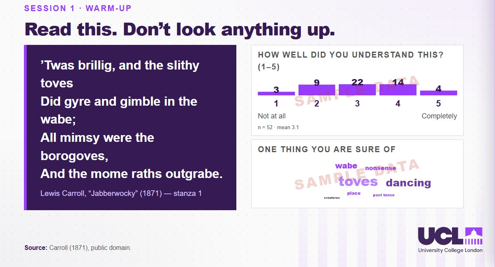

Beyond ChatbotsExploring AI Coding Tools for Teaching, Learning, and Research
Seongyong LeeUniversity College LondonInstitute of Education (IOE)
Workshop map
You will move from using AI tools to planning one of your own
Explain
How chatbots differ from AI coding tools.
Identify
Uses in teaching, learning and research.
Plan
A small tool or automation from your own idea.
Check
Accuracy, security, ethics and validity.
The core shift: using AI tools → creating tools with AI.
Part
01
Beyond Chatbots
What AI coding tools are, and how they differ from the chatbots we already know.
The shift
AI is no longer only something we use; it is something we can build with
Using AI tools
Ask · Discuss · Generate
You type. The AI answers. You copy the result somewhere else.
Creating tools with AI
Build · Test · Automate
You describe. The AI builds. You test, judge and improve.
From using AI tools to creating tools with AI.
Jeon & Lee (2023).
Key messages
Three kinds of tool, three kinds of activity
AI Chatbots
Ask questions, talk ideas through and generate content.
Ask · Discuss · GenerateAI Coding Tools
Describe what you need. The tool writes, runs and fixes the code.
Build · Test · AutomateEducational Applications
What you make: tools that serve your class or your study.
Teach · Learn · ResearchCoding tools are the means; educational applications are the goal.
How they differ
From chatbot to agent to coding agent: each step does more on its own
Answers
Replies in a chat window. You copy the result and use it somewhere else.
Acts
Plans steps and uses tools for you: search, files, other apps.
Builds
Reads your project, writes and runs code, tests it and fixes it.
Same underlying AI; the difference is what it is allowed to do.
How they differ · side by side
Same request, different result: text to copy versus a working file
The chatbot gives you material. The coding agent gives you a tool, tested.
The tools you will hear about
Different names, one idea: an assistant that can act in your project

ChatGPT
A chat assistant, with coding and work tools added.
Web · desktop · mobile
Claude Code
A coding agent that reads your project and runs commands.
Terminal · IDE · desktop · web
Codex
OpenAI's coding agent, included with ChatGPT plans.
App · IDE · CLI · cloud
GitHub Copilot
GitHub's coding agent, tied to issues and pull requests.
Desktop app · CLI · VS Code
Cursor
A coding agent built around an editor, with CLI and cloud agents.
Desktop · CLI · SlackChoose by the job — ask, discuss or build — not by the brand.
Screenshots: official product websites.
Under the hood
A coding agent works in a loop that you can supervise at every turn
every turn
The goal, the pedagogy, the data, and what "good" means.
The typing, the running, the first round of debugging.
You stay in the loop; the agent does the typing.
Part
02
AI Tools for Teaching & Learning
Practice chatbots, interactive activities and personalised learning tools — three sample cases.
Teaching & learning · the map
One coding tool can produce many kinds of teaching and learning application
Start from the learner activity you want, then pick the shape of the tool.
Kasneci et al. (2023).
Case 1 · Practice chatbot
A chatbot becomes pedagogy when the teacher sets its rules
Level
A2 to B2 changes sentence length and the hints.
Feedback style
Recast, explicit tip, or no correction.
Wait time
A hint appears after 5 or 10 seconds of silence.
First-language support
A short Korean gloss for beginners, on request.
Oh, a coffee — sure! What size would you like?
Tip: say “a coffee” or “some coffee”.
Feedback style, level and wait time are teaching decisions, not technical ones.
Jeon, Lee & Choe (2023).
Sample tool · Teaching
Café Role-play Coach: a speaking-practice chatbot with teacher-set rules
Try it
- Order a drink. Type “I want coffee”.
- Switch feedback from Recast to Explicit.
- Turn on Korean support and ask for a hint.
Case 2 · Interactive learning activity
A class can become interactive on students' own phones
Teacher's screen
The slide deck opens an activity.
Shared database
Answers arrive live, anonymously.
Students' phones
Scan a QR code, then respond.

Polls, quizzes and group boards in one platform, designed around the lesson.
Sample tool · Learning
Word Garden: a vocabulary trainer that adapts to each learner
Try it
- Open Quiz and answer one word.
- Get one wrong. Watch the word fall back to Box 1.
- Paste your own list in the Teacher panel.
Why build?
Building your own tool puts the pedagogy back in your hands, at a price
| Asking a general chatbot | A tool you build | |
|---|---|---|
| Pedagogy | Re-explained in every chat | Built into the settings |
| Consistency | Varies from chat to chat | Same rules for every learner |
| Records | Scattered chat histories | A log you design and export |
| Control | The provider's interface | Your layout, your rules |
| Effort | Minutes | Hours to days, plus testing and upkeep |
Build when the activity is repeated and the rules matter.
Your turn · Teaching & learning
Start from the learner's activity, not from the tool
If you can finish those three lines, you have the start of a spec.
Part
03
AI Tools for Research
Instruments, data collection, analysis and the routine work around research.
Research · the map
Research tools follow the research workflow, from instrument to report
Instrument
An online task or questionnaire with your own logic.
Collect
Time-stamped logs and a clean CSV export.
Analyse
Word counts, concordances, descriptive statistics.
Automate
Clean transcripts, rename and convert files in batch.
Report
Tables and figures you can regenerate in seconds.
Automating a step is easy to start and important to verify.
Sample tool · Research instrument
Task Logger: a browser task that records every event with a time stamp
Try it
- Read the researcher view: events, timings, accuracy.
- Switch the toggle off and run the task as a participant.
- Return and press Download CSV.
Research instrument · design
A data-collection tool is only as ethical as its design
Participant
Reads the information sheet and consents.
Task page
Shows items, measures responses.
Event log
Time stamp, item, response, timing.
CSV export
Pseudonymised codes, not names.
Consent first
Nothing is recorded before the participant agrees.
No direct identifiers
Participant codes, not names or emails.
Stored where approved
Match the storage to your ethics approval.
Ethics approval covers the whole tool: where data go, who sees them, how long they stay.
BERA (2024), Ethical Guidelines for Educational Research (5th ed.).
Sample tool · Analysis
Text Explorer: word frequencies and concordance lines in your browser
Try it
- Click a bar to search that word in context.
- Turn Hide common words off and on.
- Widen the window to see more context.
Research · automation
Repetitive research chores become a request you can review
Three files by hand, before you trust the other 117.
The key that links names to codes, away from the data.
The script and the log document exactly what was done.
The agent saves the hours; the checking stays yours.
Research · speaker's workflow
An AI-assisted literature workflow still needs a human gate at every step
Candidate papers for your question.
Which papers meet your criteria.
Summaries. You check them against the paper.
Every reference against the record, not an AI answer.
AI may edit for clarity, never invent evidence.
Check each citation against the record (publisher page or DOI), not the AI's answer.
Research · responsibility
Delegate the routine, keep the judgement
Delegate
Renaming and converting files, formatting, first-draft code.
Think together
Brainstorming, wording, alternative explanations.
Delegate, then verify
Transcript cleaning, statistics scripts, reference lists.
Keep human
Research design, interpretation, ethics, the claims you publish.
The higher the stakes, the more of the work stays with you.
Part
04
From Ideas to Applications
How an idea in your head becomes a tool that works — and how to ask for it.
The process
From idea to application in six steps, with you at the controls
One sentence
The learner activity or research question.
Write it down
Who, what, rules, data, "done when".
AI builds
A first version in minutes.
Try it
With sample learners or invented data.
One change
Change one thing at a time.
Pilot
Document it and get approval.
The scarce skill is not typing code; it is knowing what to ask for and how to check it.
The process · step 2
A good request is a short spec, not a clever prompt
A café role-play chatbot for speaking practice.
Adult learners, A2–B1, first language Korean.
Recast errors. Offer a hint after 10 seconds of silence.
A scripted café dialogue. No real learner data.
One HTML file. Works offline. Exports the session log.
A learner can order and pay in eight turns.
If you can write the spec, the AI can write the first version.
The process · step 3
From one request to a working tool, with your judgement in between
The spec: goal, pedagogy, limits.
Planned, wrote, ran tests, fixed one bug.
Is it good enough for my learners?
The request is yours; the first draft is the agent's; the verdict is yours again.
The process · steps 4 and 5
Each round of feedback adds a pedagogical decision
Replies only
It works, but the replies feel random and nothing is recorded.
Adds feedback
Recast and explicit tips, plus a hint after silence.
Adds teacher controls
Level, Korean gloss and an exportable session log.
Small steps are easier to test than one giant request.
Your turn · From ideas to applications
Try it: write a spec card for a tool of your own
A spec that a neighbour can test is a spec the AI can build from.
Part
05
Critical Considerations & Q&A
Accuracy, security, research ethics and educational validity — then your questions.
Critical considerations
Four checks before you trust what an AI has built
Accuracy
Is the content correct, and is the result right?
Check against a sourceSecurity & privacy
Where do keys, data and logs go?
No real learner data in promptsResearch ethics
Is there consent, approval and transparency?
Approval covers the toolEducational validity
Does it help learning, or only look good?
Test with real learnersA tool that feels helpful can still fail the learner.
Kasneci et al. (2023); Bastani et al. (2025, PNAS); BERA (2024).
Critical considerations · how to check
Treat every AI-built tool as a prototype until it passes your own gates
Run it
Does it work, and does it fail safely?
Known cases
Does it give the right answers where you know them?
Peer check
Does a colleague agree it is sound?
Pilot
Does it help real learners or real data?
Document
Record what was built, how, and with which AI.
Responsibility does not transfer to the tool: you remain accountable.
Critical considerations · security and privacy
Security and privacy are decisions you make before you build
- Test with invented or anonymised data.
- Keep keys and passwords out of the page code.
- Store data where your approval says.
- Delete logs you no longer need.
- Paste real learner or participant data into a chatbot.
- Share a link that exposes all the data.
- Believe "it is secure" because the AI says so.
- Deploy code you have not had checked.
If the data are real, the stakes are real.
UNESCO (2023).
Summary
Three things to take away, and one thing to do this week
Create, not only use
Chatbots answer. Coding tools build, test and automate.
Design for a purpose
Start from the learner activity or the research question.
Check before you trust
Accuracy, security, ethics, validity — and stay accountable.
From using AI tools to creating tools with AI.
Thank you
Questions and discussion
Seongyong LeeUniversity College LondonInstitute of Education (IOE)